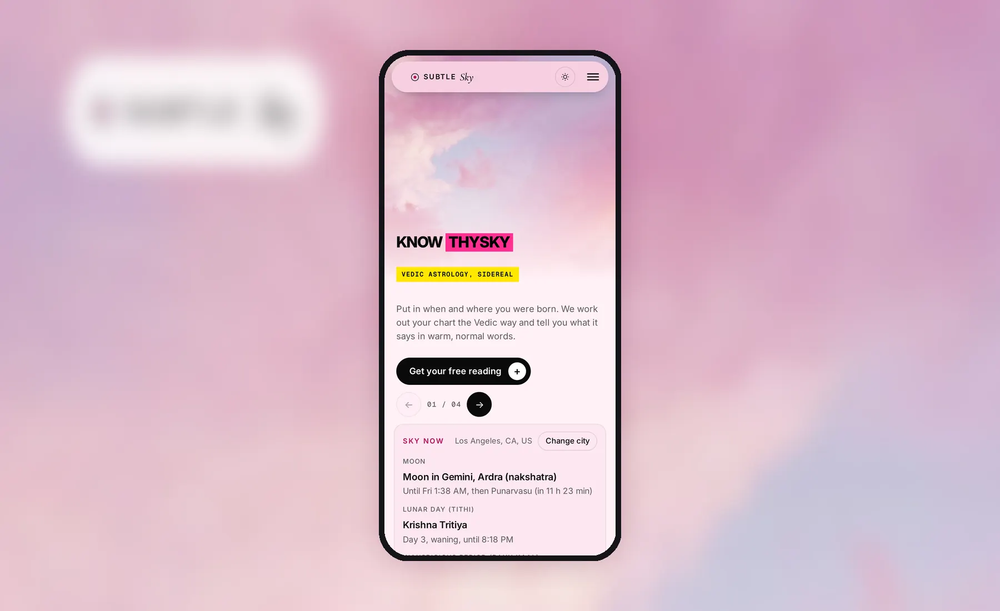
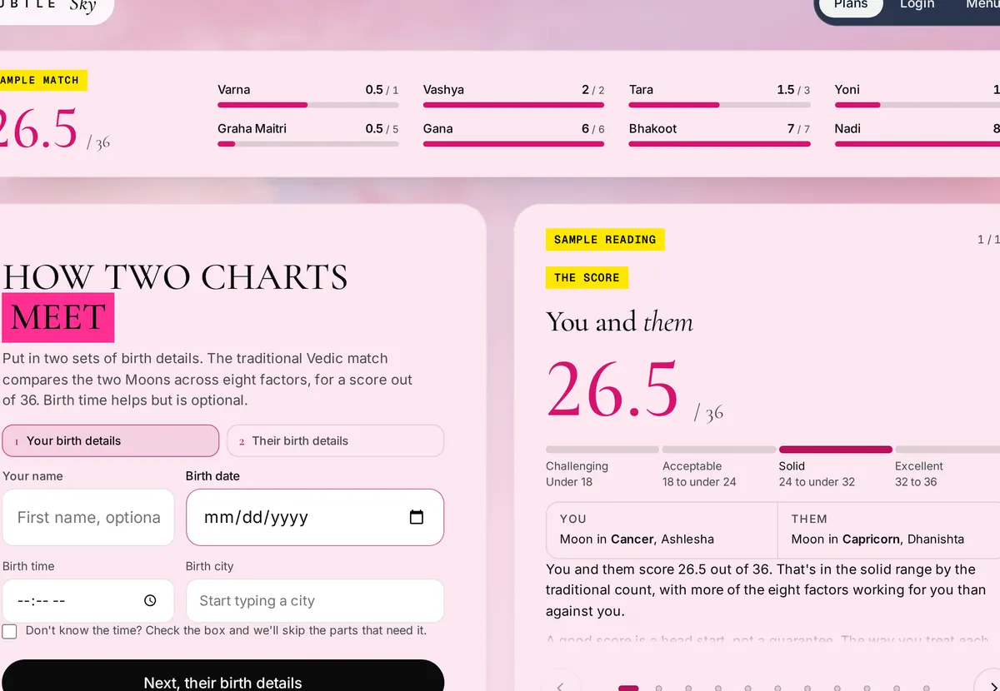
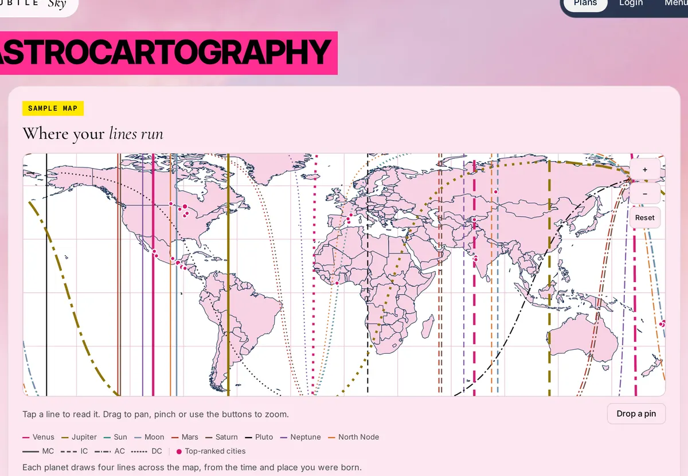
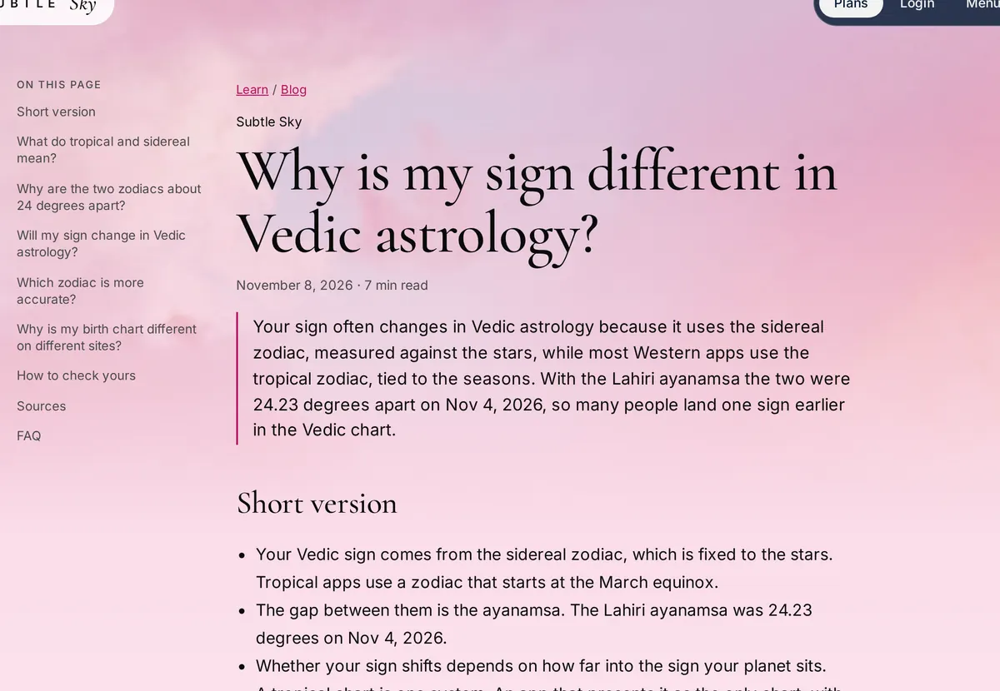

subtle sky
A Vedic astrology knowledge base I designed, built and run myself.
- Role
- Product, design and engineering
- Place
- Los Angeles
- Dates
- Ongoing
- Disciplines
- Product design, Full-stack engineering, Payments, Content library

The brief
Subtle Sky calculates a birth chart from the date, time and place of birth, in the sidereal zodiac with the Lahiri ayanamsa. The basic chart is free.
I designed the product, wrote the code and operate it.
What I did
Birth chart and compatibility
Free birth chart, plus traditional compatibility matching.
Where to Live
Locational astrocartography.
Skyprint and SSKY 365
Chart reports and a yearly solar-return guide.
Learn library
A reference library of signs, nakshatras, a glossary and essays.
Results
- 6
- product modules
- Free
- basic birth chart



On the site

Built with
- HostingCloudflare WorkersEdge
- DataD1 and R2Storage
- PaymentsStripeCheckout